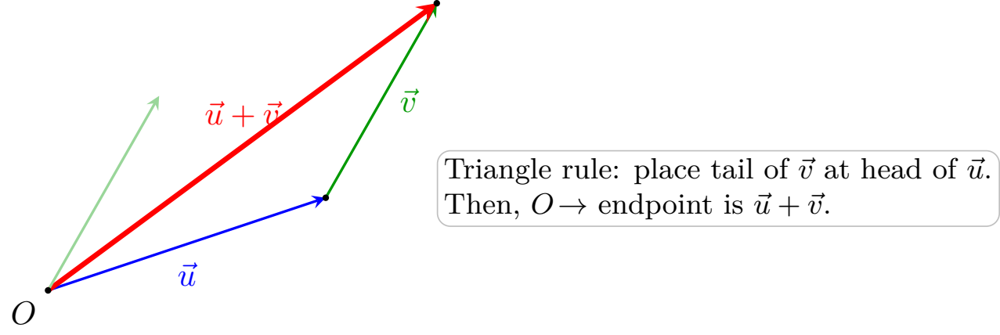

Review of Vectors & Geometry
What is a Vector?
Formally, a vector is an element of a vector space. In concrete Euclidean space \(\mathbb{R}^n\), a vector is an ordered \(n\)-tuple of real numbers equipped with component-wise addition and scalar multiplication.
Geometrically, a vector represents a directional displacement (or translation) in space. It is crucial to distinguish between points and vectors:
- A point specifies a fixed location in space.
- A vector specifies the relative change in position required to translate one point to another.
Given an initial point \(A=(a_1, a_2, a_3)\) and a terminal point \(B=(b_1, b_2, b_3)\), the displacement vector \(\overrightarrow{AB}\) from \(A\) to \(B\) is obtained by taking the coordinate difference:
\[ \overrightarrow{AB} = \langle b_1-a_1,\ b_2-a_2,\ b_3-a_3 \rangle \]Because a displacement carries both an extent and an orientation, every vector \(\vec{u} \in \mathbb{R}^n\) naturally possesses two geometric invariants:
- Magnitude (Euclidean Norm): The overall distance of the displacement, denoted \(\|\vec{u}\|\): \[ \|\vec{u}\| = \sqrt{u_1^2 + u_2^2 + u_3^2} \]
- Direction: The orientation of the displacement along its line of action, formalized by normalizing the vector when \(\vec{u} \neq \mathbf{0}\).
Let \(A=(1,2,3)\) and \(B=(4,6,3)\).
- Find the displacement vector \(\overrightarrow{AB}\).
- Compute its magnitude \(\|\overrightarrow{AB}\|\).
- \(\overrightarrow{AB} = \langle 4-1,\ 6-2,\ 3-3 \rangle = \langle 3,\ 4,\ 0 \rangle\)
- \(\|\overrightarrow{AB}\| = \sqrt{3^2 + 4^2 + 0^2} = \sqrt{9 + 16 + 0} = \sqrt{25} = 5\)
Vector Addition & Scalar Multiplication
The algebraic structure of a vector space is defined by two fundamental operations: addition and scalar multiplication.
Vector Addition
The sum of two vectors \(\vec{u}, \vec{v} \in \mathbb{R}^n\) is computed component-wise. Geometrically, adding two displacement vectors corresponds to applying one displacement after the other, yielding the triangle rule (or parallelogram law).

Find the sum of \(\vec{u}=\langle 1,2\rangle\) and \(\vec{v}=\langle 3,-5\rangle\).
Scalar Multiplication
Given a scalar \(\lambda \in \mathbb{R}\) and a vector \(\vec{u}\), the scalar multiple \(\lambda\vec{u}\) scales the magnitude of the displacement by a factor of \(|\lambda|\):
\[ \|\lambda\vec{u}\| = |\lambda|\|\vec{u}\| \]Algebraically, this scales each component: if \(\vec{u}=\langle u_1, u_2, u_3 \rangle\), then \(\lambda\vec{u} = \langle \lambda u_1, \lambda u_2, \lambda u_3 \rangle\). Geometrically:
- If \(\lambda > 0\), the displacement retains its original orientation.
- If \(\lambda < 0\), the orientation of the displacement is reversed.
- If \(\lambda = 0\), the result is the zero vector \(\mathbf{0}\), representing zero displacement.
Standard Basis Vectors
Every vector in \(\mathbb{R}^3\) can be expressed uniquely as a linear combination of the standard orthonormal basis vectors \(\hat{i}=\langle 1,0,0\rangle\), \(\hat{j}=\langle 0,1,0\rangle\), and \(\hat{k}=\langle 0,0,1\rangle\):
\[ \langle u_1, u_2, u_3 \rangle = u_1\hat{i} + u_2\hat{j} + u_3\hat{k} \]Let \(\vec{u}=\hat{i}-2\hat{j}+\hat{k}\) and \(\vec{v}=2\hat{i}+3\hat{j}-\hat{k}\). Compute the linear combination \(2\vec{u}+3\vec{v}\).
Unit Vectors & Direction
A vector \(\vec{u}\) is a unit vector if its Euclidean norm is unity: \(\|\vec{u}\|=1\).
Any non-zero displacement \(\vec{w}\) can be decomposed into its magnitude \(\|\vec{w}\|\) and its pure directional unit vector \(\hat{w}\):
\[ \vec{w} = \|\vec{w}\|\,\hat{w} \quad \implies \quad \hat{w} = \frac{\vec{w}}{\|\vec{w}\|} \]- Find a unit vector in the direction of \(\vec{u}=\langle -5, 4\rangle\).
- Find a unit vector in the direction of \(\vec{w}=6\hat{i}-3\hat{j}+4\hat{k}\).
- \(\|\vec{u}\| = \sqrt{(-5)^2 + 4^2} = \sqrt{41}\)
\(\hat{u} = \frac{\vec{u}}{\|\vec{u}\|} = \left\langle -\frac{5}{\sqrt{41}},\ \frac{4}{\sqrt{41}} \right\rangle\) - \(\|\vec{w}\| = \sqrt{6^2 + (-3)^2 + 4^2} = \sqrt{36 + 9 + 16} = \sqrt{61}\)
\(\hat{w} = \frac{\vec{w}}{\|\vec{w}\|} = \frac{6}{\sqrt{61}}\hat{i} - \frac{3}{\sqrt{61}}\hat{j} + \frac{4}{\sqrt{61}}\hat{k}\)
Applied Problem: River Crossing
A kayaker starts from the south bank of a straight river flowing due east at \(4\text{ mph}\). The kayak's speed relative to the water is \(8\text{ mph}\).
- In what direction should the kayaker head to land straight across the river on the north bank?
- If the river is \(0.75\text{ miles}\) wide, how long will the crossing take?
- Let the net velocity vector be \(\vec{v}_{\text{net}} = \vec{v}_{\text{kayak}} + \vec{v}_{\text{river}}\), where \(\vec{v}_{\text{river}} = \langle 4, 0 \rangle\). To ensure the net displacement is directed straight across the river (due north), the eastward component of \(\vec{v}_{\text{net}}\) must be zero.
Letting \(\vec{v}_{\text{kayak}} = \langle -x, y \rangle\) with \(\|\vec{v}_{\text{kayak}}\| = \sqrt{x^2+y^2} = 8\), we require \(x = 4\). Thus: \[ y = \sqrt{8^2 - 4^2} = \sqrt{48} = 4\sqrt{3} \] The heading angle west of due north satisfies \(\sin\theta = \frac{4}{8} = \frac{1}{2}\), meaning the kayaker must steer \(\theta = 30^\circ\) upstream (west of north). - The effective northward velocity component is \(v_y = 4\sqrt{3}\text{ mph}\). For a width \(d = 0.75\text{ mi}\): \[ t = \frac{d}{v_y} = \frac{0.75}{4\sqrt{3}} = \frac{3}{16\sqrt{3}}\text{ hr} \approx 0.108\text{ hr} \approx 6.5\text{ min}. \]